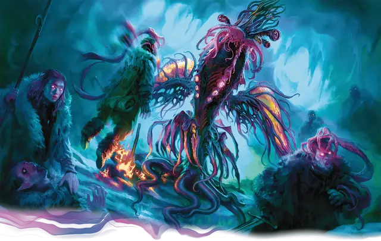

Старец
Elder Thing
Большая Аберрация, Хаотичная Злая

Класс Защиты 16 Инициатива +0 (10)
Хиты 209 (22к10 + 88)
Скорость 20 футов, Полёта 90 футов (парит)
| мод | спас | ||
|---|---|---|---|
| СИЛ | 21 | +5 | +5 |
| ЛОВ | 11 | +0 | +0 |
| ТЕЛ | 18 | +4 | +9 |
| мод | спас | ||
|---|---|---|---|
| ИНТ | 20 | +5 | +10 |
| МДР | 17 | +3 | +3 |
| ХАР | 16 | +3 | +3 |
Сопротивление урону Дробящий, Колющий, Рубящий, Психический
Иммунитеты Электричество; Испуганный, Очарованный
Чувства пассивное Восприятие 13, Истинное зрение 120 футов
Языки Глубинная речь, Телепатия 120 фт.
Опасность 14 (11 500 опыта; БВ +5)
Особенности
Сопротивление магии. Старец совершает с Преимуществом спасброски от заклинаний и прочих магических эффектов.
Действия
Мультиатака. Старец совершает две атаки Усмиряющим щупальцем и использует Психическое сверло.
Усмиряющее щупальце. Бросок рукопашной атаки: +10, досягаемость 10 фт. Попадание: 14 (2к8 + 5) Психического урона, и цель Очарована до начала следующего хода старца.
Психическое сверло. Спасбросок Мудрости: Сл 18, одно существо в пределах 60 футов. Провал: 22 (4к10) Психического урона. Если цель Очарована, она получает 1 уровень Истощения; она Ошеломлена, пока состояние Очарованный не окончено.
Умопомрачающие споры (Перезарядка 6). Спасбросок Интеллекта: Сл 18, все существа в 20-футовой Эманации, исходящей от старца. Провал: 55 (10к10) Психического урона. На 1 минуту всякий раз, когда цель совершает действие Магия, она получает 10 (3к6) Психического урона. Успех: Только половина урона.
Бонусные действия
Чуждая магия (3/день). Старец сотворяет Необнаружимость, Обнаружение мыслей, Порыв ветра или Приказ, не нуждаясь в компонентах (заклинательная характеристика — Интеллект, Сл спасброска заклинаний 18).
Бонус мастерства +5
Среда обитания Горы, Подземье
Сокровища Магические
Старец
Непостижимая сущность из иных миров
Пришельцы, известные как старцы, колонизировали бессчётные миры за невообразимые эпохи. В потаённых циклопических городах они копят секреты мультивселенной, от которых смертный разум трещит по швам. Их империи клонились к закату на протяжении веков, страдая от нападок йитиан и собственных творений — шогготов. Уцелевшие старцы оберегают остатки своего могущества и жаждут подчинить тех, кого считают низшими существами.